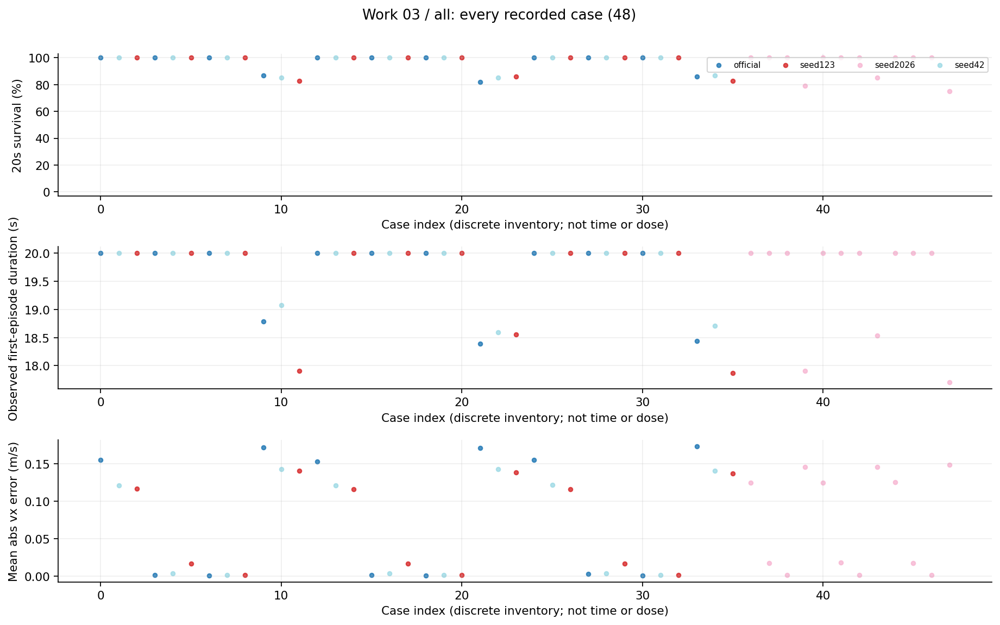
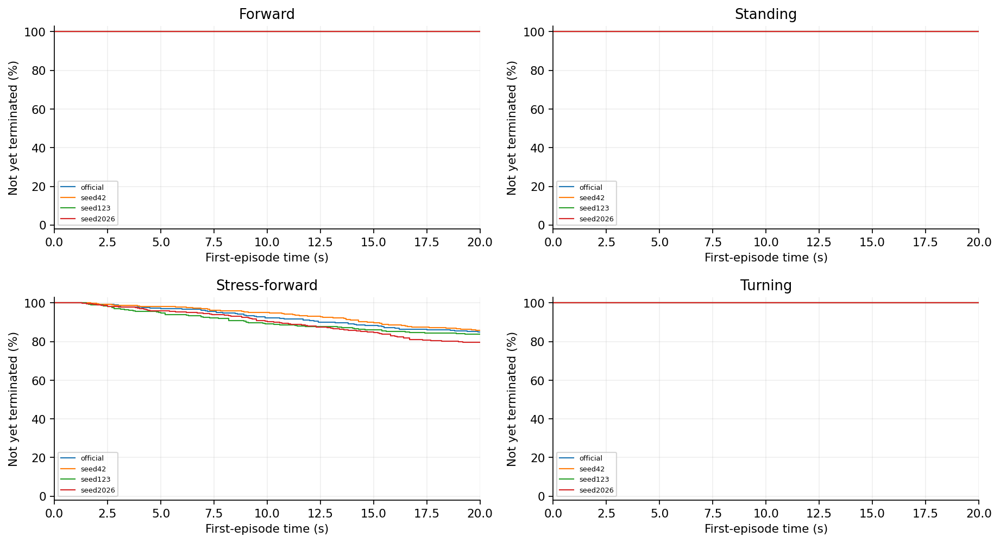
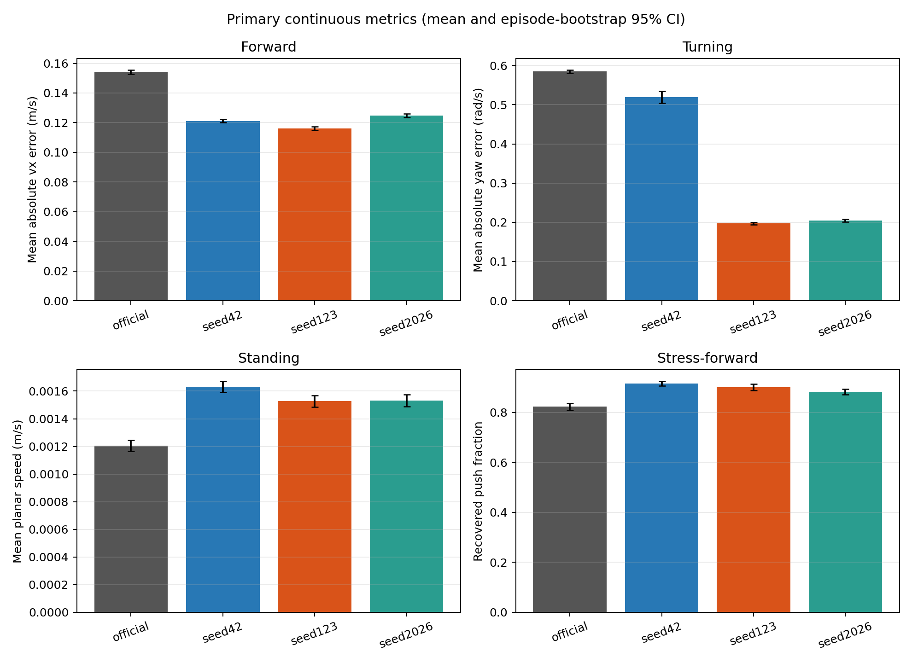
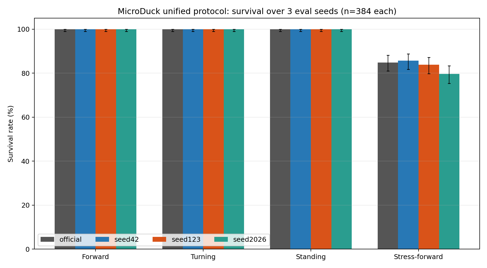
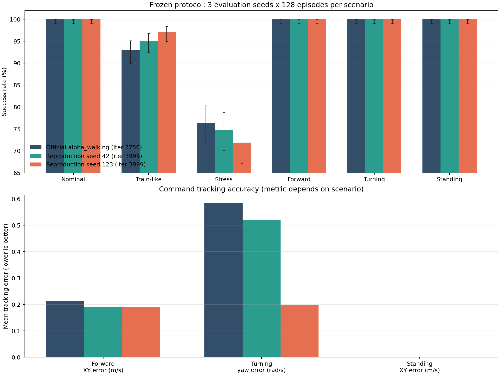
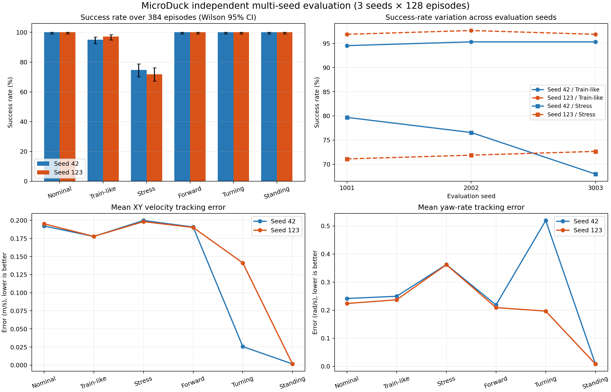
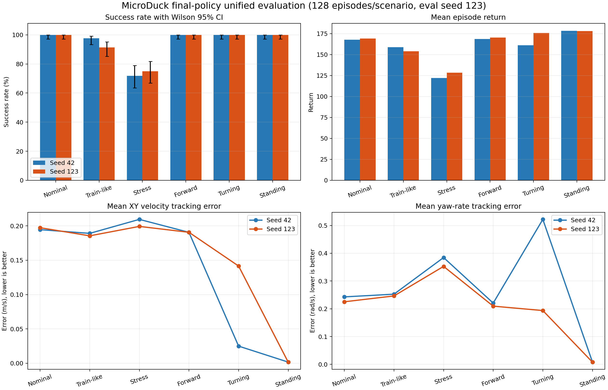
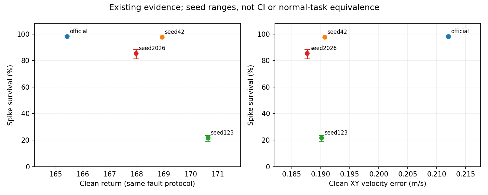
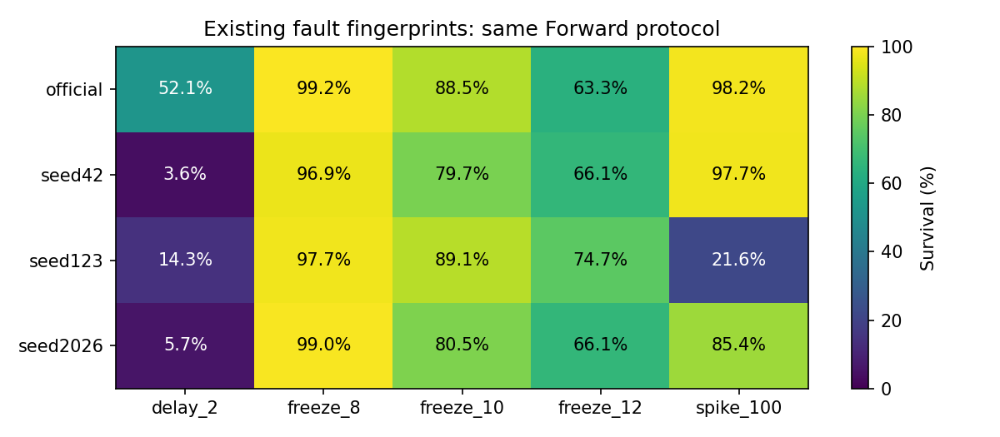

03 固定命令任务评估研究报告
所有模型在Forward、Turning和Standing均存活，但任务跟踪能力并不相同；Stress-forward下出现模型差异。因此“没有跌倒”不能单独作为策略能力验收。
整理日期 2026年10月15日 本轮仅分析已有数据 不新增实验
工作范围
official及三个本地模型，4任务×3评估seed×128首回合，共48项、6144首回合。
我们如何完成这项工作
评估seed1001、2002、3003。Forward固定vx=0.3m/s；Turning固定yaw=0.6rad/s且平移目标为0；Standing为零命令；Stress-forward使用同Forward命令并每0.5—1秒推扰。只计第一次终止前的首回合，不把reset后新回合拼入。
现有结果及解释
1. Forward平均vx绝对误差，official/42/123/2026依次约0.1542/0.1211/0.1161/0.1248m/s；前三个非推扰任务各模型都是384/384存活。
2. Turning平均yaw误差约0.5851/0.5194/0.1968/0.2047rad/s。但123的平移速度约0.1411m/s，42约0.0257m/s；目标要求原地旋转，不能只按yaw误差说123全面最好。
3. Stress存活约84.90%/85.68%/83.85%/79.69%。这些是固定策略和当前推扰分布的结果，不可将四个点当架构优劣的充分证明。
完整结果表
阶段、条件和命令分别保留。未记录的指标显示未记录，不按0填充。表内百分比为存活，不是任务成功率。
查看本工作全部16个汇总单元
图表及读图注释
读图注释 速度误差越低通常表示跟踪越好，但早停会截短统计时间，须同时看寿命。不同指标单位不同，不直接合并一个总分。
读图注释 Stress恢复时间表示推扰后的跟踪恢复，不是摔倒后自主站起。存活区间和连续指标区间的计算对象也不同。
英文坐标速查：survival 是规定时长存活，不是任务完成率；duration / seconds 是首回合有效寿命；vx 是前向速度，XY 是平面速度；yaw 是绕竖直轴旋转；MSE 是动作拟合平方误差；pp 是百分点，例如90%到80%为下降10个百分点。完整解释见读图指南。
图1 全部任务点 all

每个点是一项真实任务；横轴仅是文件记录顺序，不是连续变量，故不连线。点保留评估seed差异。条件、模型和分母可在全数据浏览器按编号查询；早停时误差只覆盖终止前。图2 首回合存续曲线 第1组

横轴为首回合仿真秒，纵轴为尚未因任何原因终止的比例；20秒超时保留在终点，不画成死亡。由已保存终止时间重算，在0.1秒网格显示；不是完整姿态轨迹，也不把跨评估seed回合当独立训练。相同曲线可能重合。图3 primary metrics comparison

保留原实验图，不改变其样本、区间或协议定义。原图英文标注见本报告名词注释；探索、确认与历史快照不可混合累计。图4 survival comparison

保留原实验图，不改变其样本、区间或协议定义。原图英文标注见本报告名词注释；探索、确认与历史快照不可混合累计。图5 three model comparison

历史补充图，保留用于追溯。本图的队列、幅度、分母或目的不同于本报告主表，不合并计数，不当成新增实验或最终主协议结论。图6 multi seed comparison

历史补充图，保留用于追溯。本图的队列、幅度、分母或目的不同于本报告主表，不合并计数，不当成新增实验或最终主协议结论。图7 seed42 vs seed123 unified evaluation

历史补充图，保留用于追溯。本图的队列、幅度、分母或目的不同于本报告主表，不合并计数，不当成新增实验或最终主协议结论。图8 clean vs fault

历史补充图，保留用于追溯。本图的队列、幅度、分母或目的不同于本报告主表，不合并计数，不当成新增实验或最终主协议结论。图9 fault fingerprints

历史补充图，保留用于追溯。本图的队列、幅度、分母或目的不同于本报告主表，不合并计数，不当成新增实验或最终主协议结论。限制与不能支持的结论
本轮复算48项原CSV的计数和主要连续均值；历史bootstrap区间沿用已有分析，不重新包装为训练总体置信度。三次评估seed不是三次重新训练，没有事后新增任务成功阈值。
证据入口与复核范围
逐文件SHA及原始路径见输入清单；本轮复算范围见数据审计。下列输入在生成后再次核对未改。
D:\MicroDuckResearch\ti\outputs\microduck_reproduction\task_protocol_v2\four_model_final\four_model_results.json
SHA256 daee8fe5e92cbfab2a1b67241608266092e6346b9578718ccf3a51ec9d5b923a
这项工作的价值
本工作的价值是把任务语义从“能站住”扩展为速度跟踪、旋转、静止漂移和抗推扰的多维验收，为后续故障试验提供正常性能参照。